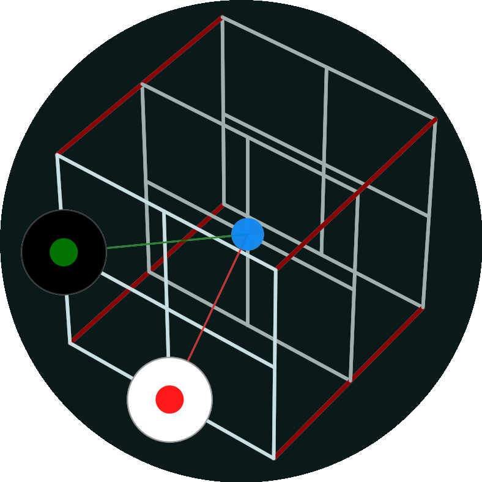

→
图标口径：参考对象=源项目 gomoku-613B-E2D 原图标——近立方体线框、大子彩心、
红/绿辅助线连至中央蓝球。亮色化=同语言浅底。正式落地=重跑 make-icon.py 按此重绘（实施期）
N 重设计：两竖=线框层叠柱，对角=红色辅助线，中央=蓝球星芒，两端=大子彩心——全部元素取自原图标。
棋盘几何（R3 修正）：层=竖立平面（行=竖直、层=纵深，同源项目 B8 口径），三层纵深堆叠并
拉深至接近正方体；层间不画连接线、不强调首尾面（统一浅色网格）。坐标：右手系，
最里面为 (0,0,0)，y 向上。
辅助线（⚠ 已知错误占位）：当前演示的"13 方向扫描"为自创简化版，已被判定与真实机制不符；
真实机制将按源项目实现照抄引入（已独立挂账 TODO，之后再实行）。悬停蓝球吸附格位本身仍可用。
展示子（原图标真实坐标）：黑(2,0,1)/白(2,1,0)/蓝球(1,1,1)，另添数子供辅助线演示。
旋转（R3 手感）：默认匀速自转（加快）；拖拽直接控制偏航，松手带惯性衰减，不与自转打架。
蓝球：纯不透明；星芒标记预落子位。本轮不可落子；最终玩具版可落子但规模取"无法成五"（如 4×4×3）。
过渡动效：平面内旋转 45° → 垂直纸面方向翻 180°，翻转过侧立面瞬间小棋盘接棒。
按钮：宽=标题宽、列高 45%；悬停特效本项目尚未实现，落地时随预开始页一并补（TODO 已挂）。
字体对位：宋体 ↔ Times New Roman（多语言西文）；日语等默认 LXGW；本页暂全 LXGW。
标题缩小位置定案：左上角。
音乐响应：演示音=WebAudio 合成琶音 + 响度分析 → N 光晕/背景光斑；正式版接 BGM 总线响度。